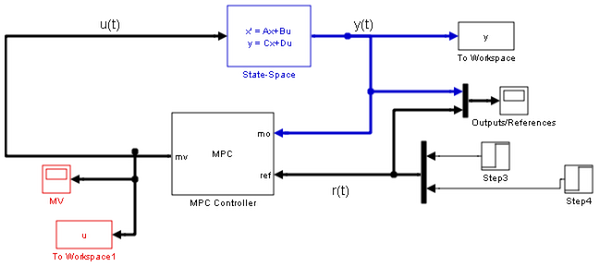
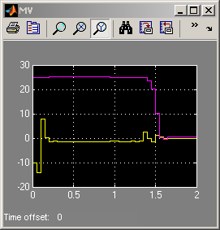
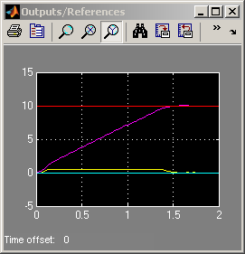

Constrained Multivariable (2x2) MPC Control of an AFTI-F16 Aircraft
Contents
This demonstration shows how to use Model Predictive Control Toolbox™ to control a simplified model of the dynamics of an AFTI-F16 aircraft with saturating actuators [1,2].
Reference:
[1] P. Kapasouris, M. Athans and G. Stein, "Design of feedback control systems for unstable plants with saturating actuators", Proc. IFAC Symp. on Nonlinear Control System Design, Pergamon Press, pp.302--307, 1990
[2] A. Bemporad, A. Casavola, and E. Mosca, "Nonlinear control of constrained linear systems via predictive reference management," IEEE® Trans. Automatic Control, vol. AC-42, no. 3, pp. 340-349, 1997.
MPC Controller Setup
if ~mpcchecktoolboxinstalled('simulink') disp('Simulink(R) is required to run this demo.') return end
The linearized open-loop dynamic model for the attack and pitch angles as a function of the elevator and flaperon angles is:
Ts=.05; %Sampling time Tstop=40*Ts; %Simulation time A=[-.0151 -60.5651 0 -32.174; -.0001 -1.3411 .9929 0; .00018 43.2541 -.86939 0; 0 0 1 0]; B=[-2.516 -13.136; -.1689 -.2514; -17.251 -1.5766; 0 0]; C=[0 1 0 0; 0 0 0 1]; D=[0 0; 0 0]; sys=ss(A,B,C,D); x0=zeros(4,1);
The manipulated variables are the elevator and flaperon angles, the attack and pitch angles are measured outputs to be regulated. The open-loop response of the system is unstable.
Both inputs are constrained between +/- 25 deg. The task is to get zero offset for piecewise-constant references, while avoiding instability due to input saturation. We also add constraints on the outputs to limit undershoots.
clear MV OV MV(1)=struct('Min',-25,'Max',25); MV(2)=struct('Min',-25,'Max',25); OV(1)=struct('Min',-0.5,'Max',0.5); OV(2)=struct('Min',-100,'Max',100); Weights=struct('Input',[0 0],'InputRate',[0 0],'Output',[10 10]); p=10; % Prediction horizon moves=3; % Control horizon mpcafti=mpc(sys,Ts,p,moves); mpcafti.Weights=Weights; mpcafti.MV=MV; mpcafti.OV=OV;
-->The "Weights.ManipulatedVariables" property of "mpc" object is empty. Assuming default 0.00000. -->The "Weights.ManipulatedVariablesRate" property of "mpc" object is empty. Assuming default 0.10000. -->The "Weights.OutputVariables" property of "mpc" object is empty. Assuming default 1.00000.
Simulation Using Simulink®
open_system('mpc_afti16') sim('mpc_afti16',Tstop)
-->Converting model to discrete time. -->Integrated white noise added on measured output channel #1. -->Integrated white noise added on measured output channel #2. -->MPC problem is constrained and "ManipulatedVariables.RateMin" is not completely specified or has infinite values. Setting values to -10 to prevent numerical problems in QP. -->The "Model.Noise" property of the "mpc" object is empty. Assuming white noise on each measured output channel.  
bdclose('mpc_afti16')